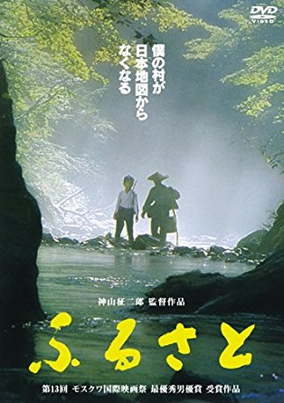
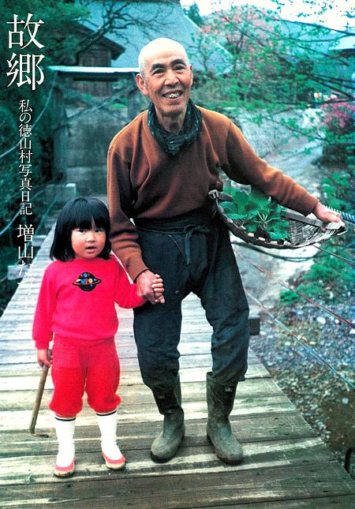
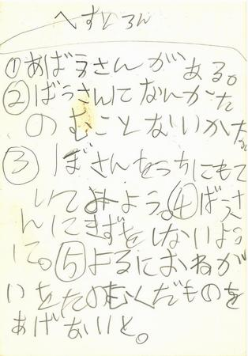

釣行日誌 故郷編
1984/08/19～24 徳山村へバックパッキングでのテンカラ釣り
8/19（日）
昼、11時に起きる。部屋の整理と洗濯。昼食をとり、旅行の準備をする。先日の子どもキャンプの疲れがドッと出ている。町へ買い物へ行く。
夜、とっちゃんとコーセーと３人で麻婆豆腐を頂く。
21時に寮を出て、風呂へ行く。長岡駅には22:20頃に着いた。バックパックをベンチに立てかけ、ゴソゴソやっていると、Ｅ子ちゃんが見送りに来てくれた。コーセーが気をつかって電話してくれたようであった。嬉しかった。
22:58分発の新潟発大阪行き夜行急行列車「きたぐに」の自由席に、重いバックパックを抱えて乗り込む。ダッチ、ルン坊、コーセー、とっちゃん、Ｅ子ちゃんの見送りで列車が長岡駅のホームを走り出す。
車内は冷房が効きすぎて寒く、モンベルのハイパロン・レインコート取り出して着込む。汗をかいてそれが冷えて、よけいに寒く冷たい。
8/20（月）
翌朝06:25、米原駅着。06:18分の豊橋行きに乗り換え、07:15分に岐阜駅に到着。バス停の位置を道行く人に尋ね、あたりをウロウロする。なんとかたどり着いて時刻表を見ると、06:15発が出てしまっており、次は10:45まで無かったので、３時間近くブラブラしながら本屋が開くのを待つ。
市内は８時頃から猛烈な雨となってきた。近づいている台風の影響であろう。本屋を数件回ったあげく、10:10になって、PARCO（懐かしい！）の６Ｆでようやく地理院発行の地形図を売っているのを見つけ、徳山村をカバーする数枚を買い込む。急いでバス停に駆けつけ、10:45発のバスに乗る。バカでかい荷物を網棚に積み上げる。長良川の忠節橋を渡る頃にはすっかり眠りに落ちていた。
途中、セメント工場が見えるあたりで、バスが揺れて頭を窓にぶつけて目が覚めた。
やがて山の中へと路線バスは進んで行き、めちゃくちゃ狭くカーブの多い道路に入っていった。な、なんと！ バスは自転車とすれ違うのにも一旦停止しなければならないのであったのダ。
根尾村の樽見車庫に着いたのが12:25。そこから徳山村村営バスに乗り換え、徳山村開田地区にある役場前バス停へと向かう。バスの中で、若い女の人に、「増山たづ子」さんの民宿を訊ねると、その女性は同じ方向へ行くので一緒に来れば良いと言ってくれた。
国道157号線から狭い県道に入り、次第に山が深くなってきた。坂道をぜいぜいと登って行くバスの窓からはるか下に、今登ってきた道路が見えている。馬坂峠のトンネルが見えた。入り口が鋼鉄製の支保工（補強材）で囲われていた。暗闇に入ったバスがトンネルを抜けると、すぐに振り返った。映画「ふるさと」のラストシーンの風景がそのままに見えた。
峠を越えたバスはものすごい下り坂をそろりそろりと降りてゆく。揖斐川沿いに出て、川に沿って曲がりながら走って行くと、下開田（しもかいでん）の集落が見えてくる。向こう岸、集落の方にも林道が走っている。
{kind=link}
（国土地理院発行 1/25,000 地形図をスキャン）
地図をクリックすると、大きな画像で見ることができます。
赤丸印が増山たづ子さんの住んでいた戸入の集落
徳山村の上開田（かみかいでん）にある役場前バス停には13:20に着いた。さらにここでバスを乗り換え、徳山村最奥部の門入（かどにゅう）地区行きのバスに乗る。中学校の出校日らしく、男子生徒、女子生徒が４人くらいずつ乗り込んでくる。さっきの女性が１人の女子生徒に
「あら、○○ちゃん！」
と声をかけていた。故郷へ帰ってくるのはいいものだ。女性と釣りの話しなどをしていると、13:40にバスが門入に向けて発車した。
しばらく走っていたバスが、西谷川を渡る橋の上で急に止まり、下の川原で投網漁をしているおじさんに、運転手さんが呼びかける。（笑）
「おーい！ 獲れるかい？」
「あ～あ、ボチボチだな！」
おじさんがビクをこちらに向けて獲物を見せてくれた。鮎らしい魚体が５～６匹見えた。増水して濁った川の浅瀬に投網を打っている。
再び走り出したバスは、狭い山道を避け合い避け合いしながら山奥へと進入して行く。途中、カーブのやや広くなった所に、「セキスイハウス」の大きくきれいなカラーの看板が出ている。ダム建設で村を離れ、移転先で家を建てる人に向けて宣伝しているのだ。山道の寂しさの中で、派手な看板だけが浮き上がって見えた。
10分ほど走ると、女の人が、
「ここでいいですよ」
と教えてくれたので、バスを降りる。「戸入：とにゅう」の集落に着いたのだ。さらに奥の門入集落まで行く女性に手を振って別れ、バックパックを背負い、あてもなく道路を歩き出す。
「さて、どうしよう？」
ちらほらと民宿の看板が見える。すると、おばさんが男の子を連れてこちらに歩いてきた。
「増山たづ子さんの民宿はどちらですか？」
「ああ、すぐそこだよ」
指さしてくれた上流方向へしばらく歩き、見上げると映画「ふるさと」の中に出て来た戸入分校の校舎が見えた。すぐに「増山屋：増山たづ子」と書かれた看板が掲げられた民家があったので、恐る恐る入って行く。
「あのう、今晩泊めて頂けませんか？」
奥から、映画や写真集で見て知っていた、たづ子さん本人が登場し、
「ああ、そりゃいいけど、あんたこれからどこへ行くの？」
いきなりけっこうキツイ口調で言われたのでたじろいで、
「あ、いや、ここへ来たんです....」
「この台風の来るって言うに、山へ行くのかね？ 今日は動いちゃイカン！泊まりなさい！」
と、怒られた。（笑）きつい物言いのおばあさんだなぁと思った。
とりあえず荷物を土間において、トレッキングシューズを脱ぎ、座敷に上がらせてもらう。
「お昼は食べたの？」
「いえ、まだです。」
「あんた、どこへ行くの？」
「いや、どこへ行くつもりもないんですが、徳山村へ来たんです。」
すでに車で来ていたと思われる男性のお客さんが、たづ子さんと顔を見合わせて、けげんな表情をした。
とにかく、お昼を頂けることになった。味噌汁、ご飯、コンニャク、あさりの和え物、キュウリを出してくれた。長旅でお腹かが空いていたので、やたら美味しい。ご飯と味噌汁と３杯ずつおかわりしてしまった。
たづ子おばあさんは、座敷の隅の小さな机で、「旅の手帖」という雑誌に向けた原稿をしたためている。スケジュールがいっぱいで、書き物が溜まってしまったそうだ。眼鏡を掛けて、日記を見ながらネタを考えつつ、原稿用紙にスラスラとペンを走らせている。たいしたものだ。すごいと思った。
お昼を間食したらいきなり睡魔に襲われ、３時から６時半頃まで座敷で眠ってしまった。
夕ご飯の時間となり、囲炉裏の回りにたづ子おばあさん、お客さん、僕が集まり、豆腐、コンニャク、にゅうめん、キュウリ、シーチキン、ご飯のメニューであった。疲れが出たのと、やや風邪気味で少し喉が痛かったが、それを吹き飛ばす夕食の美味しさだった。キュウリに添えられた味噌は自家製だそうで、ややしょっぱかったが、とても美味しかった。味噌を付けて食べる生のキュウリが抜群に旨い。またおかわりを重ねてたらふく頂いた。
食後はテレビを見て、みんなで笑った。そうしていると、民宿「増山屋」にほうぼうから次々と電話がかかってくるのでびっくりした。
たづ子おばあちゃんの話では、来年の５月には村を出るとのことだった。その日まで、残された日々を指折り数えるおばあちゃんの、数えるものの重さと哀しさのどれほどを僕は知ることができるだろう？
奥の間の長押の上には、出征したまま帰らぬ旦那さんの写真と、靖国神社を背景にした天皇皇后両陛下の写真とが並べて飾られている。
国とは、何なのか？
この山、この川、この村。これらは「国」ではないのだろうか？
僕にできることは、何なのだろう？ それを探すために、見つめるために、この村に来たのだが....。
居間の戸に、大きな日本地図が貼ってある。その隣には映画「ふるさと」のポスター。山深い渓谷、崖下の淵の上流側より川面の靄を背にして立つ「じい」、加藤嘉さんと子役の浅井晋君の二人の姿が浮かび上がるポスターである。

共演は、樫山文枝、篠田三郎、岡田奈々、前田吟、樹木希林、長門裕之などなど。キャッチコピーは、「ぼくの村が、日本地図からなくなる」である。
木戸の上の方には、たづ子おばあちゃんの息子さんの写真も飾ってある。
開け放してある庭に面した障子から一匹のキリギリスが座敷に入ってきた。台風の前にはよく入ってくるそうだ。たづ子ばあちゃんは、何でもよく知っている、賢い人だなぁと思った。カレンダーには、宿泊客の予定から、取材の予定、原稿の締め切りなどがびっしりと書き込まれて埋まっている。それらもろもろを眺めているうちに眠くなり、布団を敷いてくれた部屋に下がって崩れ落ちた。
8/21（火）
朝、8:05頃に起き出す。隣家のおじさんが来ていて、鉈と包丁を研いでいる。写真集に出ていた体格の良いおじさんだ。顔を洗ってトイレに行き、座敷に戻っておばあちゃんにキンカンを借りて、なぜかかぶれた腕に塗り込む。
おじさんの研ぎ方を見学しつつ、天竜川の佐久間ダムの話をする。聞けば、昔は林業関係の仕事で、愛知県の北設楽郡、僕の実家の近くに滞在したことがあるそうだ。国道151号線の難所、池場坂の悪路のことや、静岡県の浦川町にある吊り橋のことなどを話してくれた。当時は川上さんという人の家に泊めてもらっていたそうだ。たづ子ばあちゃんが朝ご飯を用意してくれた。今朝は目玉焼き、海苔、ご飯、味噌汁である。今日の味噌汁は赤味噌が使ってある。昨夜僕が、実家の母は赤味噌を手作りしていると話したので、気をつかって下さったようだった。多謝。
おじさんは、鉈をピカピカに研ぎ上げるとどこへともなく消えた。
朝ご飯の前に、たづ子さんは仏様にご飯を供えてお祈りをした。立派な仏壇である。
「あんたんとこじゃぁ（あなたの家では）、こういうことはせんかん？（しませんか？）」
「僕の家では祖父が小さな銅製の茶碗で、神棚と仏壇（実際には祖父が、昔に住職と喧嘩して檀家から抜け、神道になっていたのだが）お茶をあげています」
と答えた。
おばあちゃんとテレビを見ながらご飯をいただく。大森実氏や、森本アナウンサーが、ロスアンゼルスの日本人女性が撃たれた疑惑事件について解説している。
「これも、バカな話しだねぇ」
と、たづ子ばあちゃんが言う。台風の情報を知りたいのだが、なかなか天気予報をやらない。ご飯を食べ終わり、デザートの梨をいただく。出して下さるものみな、とても美味しい。インスタントコーヒーと砂糖の瓶、カップを盆に載せて出してくれ、自分で勝手に作って飲めよ、と薦めてくれた。
熱いコーヒーを飲み、くつろいだ後に歯を磨いていると、テンポの良い音楽が流れてきた。おばあちゃんはＮＨＫのジャズダンスにチャンネルを合わせて見始めたのだった。また振り向き、鏡を見ながら前歯にブラシを当てて往復させていると、なにやらドス、バタンなどと体を動かすような気配がするので座敷を見ると、たづ子ばあちゃんがリズムに合わせてエアロビクスのようなことをしている。感心した。恐るべき若き精神。とてもとても敵わない。僕も座敷に上がって、ストレッチをやってみた。
テレビが終わり、おばあちゃんと二人で書き物をした。彼女は「旅の手帖」の原稿の続き、僕はこの日記を書いている。
外の雨は大降り。どこへも行けそうにない。
たづ子ばあちゃんが、近所の家に電話して、今日と明日の手伝いを頼んでいる。今日も、ほうぼうから電話がかかってくる。
10:45頃、郵便配達のおじさんが来た。彼は、なんだかんだで350万円の借金があると、明るい顔でカラカラと笑いながら教えてくれた。次は隣家のおばあちゃんが来て、芋の塩煮をして欲しいとたづ子さんに頼んでいる。
「戸入の言葉はキツイでな。喧嘩しているみたいだで、びっくりせんようにな」
おばあちゃんは、お客さんたちに頼んで徳山村の本を買ってもらっていた。
お昼ご飯をいただいてから、「増山たづ子」という女性を一躍有名にした写真集「故郷 私の徳山村写真日記」を見せていただきながら、じきじきにコメントや撮影時のエピソードなどをいろいろと教えてもらった。

この時、たづ子さんは少し耳が遠くなっているそうで、近くによって話してくれた。僕が真剣に聞き入って、いろんな質問を繰り出したので、えらく気に入ってもらい、僕の手を取って喜んでくれた。
炭焼きの写真のこと、友人であるおじいさんのこと、彼が簔を作った時のこと、いっぱい教えてくれた。
そうこうしていると、隣家の小学２年生、幸二君が遊びに来た。聞けば、朝鉈を研いでいたおじさんの息子さんであった。一緒に電話の番号当てクイズや、トランプで遊ぶ。仲良くなっていっぱい遊んだ。

お姉ちゃんの恵子ちゃんも来たので話をした。みんなで散歩にも行った。少し坂道を登って戸入分校にも行ったし、「道場」と呼ばれる村の集会場みたいな建物にも行った。ここは、「ふるさと」の映画の中で長門裕之さんが、加藤嘉さん演じる、年老いてボケてしまった父親と口げんかをして面白くないので、独りになるために来た建物である。
次は、「下手の橋」を渡って向こう岸にも行ってみた。
増山屋に戻ると、多治見と名古屋からの家族連れが３組到着していて、小さい子どもが増えて保育園のようになっていた。とても賑やかである。これではたづ子ばあちゃんが応援を頼んだのも無理は無い。
おばあちゃんから、少し薪割りをやってくれんか？と頼まれたので、庭へ出て、切り株の上に太い枝を立て、斧で割ってみた。子どもたちが注目しているので、少々緊張して肩に力が入ったが、思ったよりも上手くできてほっとした。かなりの量を割ったような気がしたが、できあがった薪を見たらそれほどでもなかった。
それから座敷に戻り、ビールを頂きながらビデオを見せてもらった。お客さんの中に、俳優の沼田曜一さんという方がみえて、彼が語りを担当している「おこりじぞう」という昔話のテープをかけて上映してくださった。また、たづ子ばあちゃんが以前に出演した「こんにちは！２時」という番組も見ることができた。子どもたちも興味深そうに見ていたが、じきに庭で花火を始めた。
続いて、戦争の番組を録画したビデオが始まった。じっと見た。
夕食の時間となった。大勢が囲炉裏の周りにぐるりと集まり、アマゴの塩焼き、豆腐、里芋、キュウリ、梅干し、フキの煮物のゴマかけなど、やはり出るものすべてが美味しい。映画の中のお盆のシーンそのままである。
食事が終わると、片付けを済ませたたづ子ばあちゃんが囲炉裏端に来て、四方山話をしてくれた。戦争のこと、中国でのこと、蒋介石のこと、捕虜のこと、日本はあの戦争に負けて良かったのだということ、毎夏やって来るツバメのこと、ツバメを狙う蛇のこと、動物や人間の世界での喧嘩や弱いものいじめのこと、隣家の夫婦、清十郎さんとハナさんが駆け落ちした時、二人を土蔵に匿ってあげたこと、幸二君のおばあちゃんのこと、息子の好平さんの名前の由来、平和を好む人になるように願いを込めて付けた...ということ。
沼田さんは小説を書いている。皆はもう眠りに就いた。僕も寝よう。11:10頃。
8/22（水）
朝、6:00起き。朝食抜きで支度をして、6:30頃から下手の橋を回り、広瀬又という小沢に入る。本流は水が多すぎたのだ。いそいそと自作のテーパーラインを穂先に結ぶ。当時のデザインは、長さ 3.2mを６セクションに分け、ハリスの方から順に
２号：２本縒り
２号：３本縒り
３号：４本縒り
３号：５本縒り
２号：４本縒り
３号：３本縒り
という構成でナイロンラインを縒り合わせてあった。単純なテーパーではなく、中央あたりが太い、ウェイトフォワードのようなデザインである。古いパッケージのラベルを見ると、F = 2.95 という何かの係数がメモしてあるが、今となっては謎である。桑原玄辰氏の著書にあったレシピだろうか？
朝方は小さいアマゴがたくさん出るが、１匹も合わせられない。もっと遡行して行くと少しだけ型の良い、22～23cmクラスが釣れた。
小さな木橋があり、その下をくぐって上流へ出る。浅いが大きな淵がある。淵尻を流すが出ない。頭の流れ込みを流すと、また小さいのが挨拶に出た。と、突然さっき流したはずの淵尻でバシッというライズの音が聞こえた。
『おっ！ そこに居たか！？』
振り向いて砂利に膝を付き、姿勢を低くして毛鉤を流すと今度は出た！合った！大きい！！ 立ち上がって後ずさる。足下には緩やかに砂利が溜まっていたのでそこへずり上げることにした。竿を立ててこらえながら寄せてきて魚体を水から引き抜く。ビタビタビタッと魚体を震わせて跳ねる。手網をかぶせるようにしてすくうと、銀白色の大きなアマゴだった。粗末なテンカラ毛鉤が喉の奥に刺さっている。丸呑みしたのだ。指ではなかなか鉤が外せない。ベストのポケットから水温計を取り出し、その先端で鈎を押して外そうと試みるがだめだった。弱らせないよう水の中に網を浸し、ゆっくり丁寧に続けているとようやく外れた。大きい。綺麗だ。素晴らしい。ヒレも背も頭も頬もみな、張り詰めた美しさを湛えている。
僕の愛用のハーフサイズカメラ、オリンパスのペンで撮してから、そっと魚体を水に戻す。
少し上流に遡行し、堰堤の下の淵尻を攻める。ゆっくりと浮上して毛鉤を咥えた１匹を合わせ損なって逃がす。奥の淵では、釣るべくして釣った。とは言え、２度目のチャンスを何とかものに出来たのだった。掛けてから堰堤を慎重に降りて取り込んだ。
大小７匹釣れた。いささか腹が減ってしまったので、沢筋から藪漕ぎをして杣道へと掻き登り、11:00ちょうどに増山屋へ戻る。たづ子ばあちゃんが、
「なんだ、手ぶらで帰ってきたか？！」
と、笑った。じきにお昼にしてくれるそうなので、また遊びに来ていたの幸二君とババ抜きをして遊ぶ。お昼をいただき、お客さんの山口さん一家が、奥にある門入（かどにゅう）の集落まで、車でドライブに行くと言ったので、僕も同乗させてもらう。渓は凄く深かった。皆で川原に降りて、果物のカンヅメを開けて食べた。ここならキャンプできそうだったので、もう１泊することに決めた。
15:30頃に民宿へ戻り、荷物をバックパックに詰め、たづ子ばあちゃんにお勘定をしてもらう。台風が去ったので天気も良くなり、彼女も安心して野宿へと送り出してくれた。村の中の細い道路を歩いて上流の川原へと向かう。バックパックは重いが、歩きながら、思わず口から歌が出て、独り歌いながら歩く。16:20頃に、養蜂場下の川原が見えて来て、広くなったところへと降りる。
まず、テントを立てる。立て終わってから釣り用の服に着替え、先日の釣りでちょっと不具合の発生したテンカラ竿を応急修理する。なかなか上手く直らず困った。瞬間接着剤があればなぁと思った。なんとかごまかしてとりあえず釣れるようになったので、
テーパーラインの先にハリス 1.5号をひとヒロ繋げ、毛鉤を結んだ。
水量の多い流れの瀬脇、葦の陰を丁寧に攻めながら釣り上がるが、遠くで小さなライズがあるだけだった。アマゴではないかもしれない。たまにそれらしい出方をして反応があった。１匹掛けることができて期待したが、抜き上げてみるとアカブト（カワムツ）だった。18:30頃まで釣って、今日はボウズで上がる。
ウェーダーとシューズを脱ぎ、石の上に干してから飯の支度を始める。まず米を研いで水を加え、スベア小型ストーブの火に掛ける。コッフェルの中が煮たって来た。ホワイトガソリンのストーブの調子も上々だ。吹き上がってきたので、アルミのフタの上に拳大の石を載せて重しにする。ちょっと水が多かったかなと思ったが、以外と上手く炊けた。次はまたお湯を沸かしてレトルトのカレーを温める。ごく弱火にして沸かす。カレーが温まったので取り出し、その湯でインスタントの味噌汁を作る。おばあちゃんに卵をもらって来たので、目玉焼きも作ろうかと考えたが、サラダオイルを忘れたのに気づく。ガチョーン！！なんと！ しかたなく諦める。
今夜の夕餉は、カレーライス、味噌汁、サラミソーセージというメニュー。美味かった。川原の大石に腰掛けて、独りで食べた。背後でガサッと音がすると、とても恐い。いったい何の音だろう？
8/23（木）
朝、6:00に起きる。湯を沸かして卵を茹でる。４つ茹でてしまう。シュラフカバーを干し、シャツも干す。湯を沸かしながらテント内を片付ける。流れに行って食器を洗っていると、ハヤの稚魚が寄ってきた。卵は５分茹でた。残りの飲料水を沸かし、インスタントコーヒーを作る。朝食は、乾パン、サラミ、きれいに半熟に仕上がったゆで卵。とても美味しくて、ゆで卵４つをペロッとたいらげた。食塩を入れてきたケースの蓋が上手く開かず、手で摘まみだして卵に振りかけた。
朝食を済ませ、７時過ぎ、片付け作業に入る。テントをバラして干す。陽の当たるところへ出してマットも干す。なかなかの大仕事を慌てて済ませた。
8:15にテントサイトを出発し、道路へ出たところで川に向かって一礼した。ミツバチの箱の横で林業のおじさんたちが仕事をしていた。
再び民宿増山屋を訪れ、顔を洗わせてもらう。沼田さんたちが朝食を食べていた。隣の幸二君と、もう一人の男の子が遊びに来たので、野球をやり始めたらたづ子ばあちゃんに怒られた。畑にボールが入るからイカン！とのことだった。幸二君が、学校へ行って続きをやろうか？と聞いてきたが、残念なことにタクシーが来てしまった。幸二君は
「バイバイ...」
と言って自分の家に入ってしまった。悲しそうな顔をしていた。彼が来ていた「ふるさと」の映画ロゴの入ったＴシャツが悲しい。
座敷のおばあちゃんに声をかけ、本を売ってもらう。分厚い徳山村村史である。たづ子ばあちゃんと別れの挨拶をした。いつまでもお元気で、と言って別れた。思わず涙がこみ上げてきた。たづ子さんが、いつものカメラで写真を撮ってくれた。バックパックをタクシーのトランクに入れ、沼田さんといっしょに後部座席に乗り込む。振り返り、振り返り、たづ子ばあちゃんにずっと手を振る。タクシーが走り出す。
先日増山屋に泊まっていた時、沼田さんが、今日東京へ帰るのでタクシーを呼ぶから、良ければ新幹線の岐阜羽島駅まで乗せていってあげるよ、とありがたい言葉をかけて下さっていたのだ。沼田さん、タクシーの運転手さんと三人で、ふるさとのことについて話す。いろいろなことを話す。馬坂峠のトンネルに入る直前、もう一度振り返った。徳山の山並みと渓谷とが下の方に見えたが、すぐに入り口の丸い光の中に小さくなり、見えなくなった。
岐阜羽島駅には11時頃に到着した。沼田さんに別れの挨拶とお礼を述べる。11:26発のこだまで名古屋へ向かう。当初は岐阜駅から再び夜行の「きたぐに」で長岡までまっすぐ帰ろうと思っていたのだが、高専時代に研修でお世話になった、味噌川ダム建設事務所の皆さんに挨拶をして行こうと、特急「しなの」で木曽福島に向かう。
木曽福島の駅に着くと、電話をしておいたので、水資源公団の職員の吉田さんが迎えに来てくれていた。車で国道19号線を北上し、懐かしい建設事務所に着いた。藤原さんという材料試験室を維持管理されていたおじいさん（おそらくは現地採用の方だったのだろう）や、仲良くテニスをしていただいた女性職員の方々、田口さん、田上さん、大久保さん、古畑さんなどがいらして、懐かしくおしゃべりをした。
夕方５時になり、職員のみなさんと町中の店でビールなどをごちそうになり、寮へ泊めてもらう。９時に眠りに就く。
8/24（金）
翌朝、再び吉田さんに木曽福島の駅まで送ってもらい、塩尻、篠ノ井、直江津経由で長岡まで帰ることとなった。
昨夜のお酒が残っているせいか、いろいろなことがあったせいか、様々なことが頭の中でぐるぐると巡り、列車に揺られながら、夢を見た。
僕は、見送ってくれたみんなに手を振って、夜行列車に乗り込む。どっこいせ、と、荷物を網棚に載せる。
振り向くと、君が荷物を抱えて立っている。僕はおどろいてしまう。君の荷物は小さくて、僕のと同じ青色をしている。網棚に載せてあげてから、座る。
君は、僕のうしろの席に座っている。隣が空いたので、僕は君を誘って横に座ってもらう。
僕は、君の手をとって、君の瞳を見つめる。君の手は小さい。とてもやわらかで、その指の細さまではっきりとわかる。
じっと見つめ合っていると、君は僕に尋ねてくる。
「どこへ行くの？」
僕は黙ったまま、君を見つめている。黙ったままだけれど、心の中では、こう言うつもりだったんだ。
「ずっと、いっしょに」
君は、微笑んで、僕の瞳を見つめ直してくれた。
目が覚めると、列車は、直江津を過ぎ、夏の日本海を左手に見ながらゆっくりと走っていた。
釣行日誌 故郷編 目次へ
サイトマップ
ホームへ
お問い合わせ